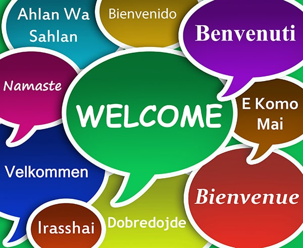

Madma Esther Sannier a
tonde sa societe de traduction en Z009.
Attentive a la demande au marche, rentreprise sest orientée sur le marché des PME avant des partenaires
étrangers, et s'est peu a peu specialisee dans e domaine commercial et technique :
plaquettes d'entreprises, modes demploi. rapport.
articles de blog. descriptif techniques, aevis, courriers,
ect...

Soucieuse d'ottrir a ses clients
Benvenuti
un travail de gualite irreprochable elle nembauche gue des traducteurs dont la
lanque maternelle est celle de la lanque souhaitée : anglais,
E Komo espagnol, italien, portugais,
Mai
allemand néerlandais japonais, mandarin, ect..
Chaque travai est soumis a des traducteurs ditterents: E premier traduit. le second
Bienvenue exécute les corrections